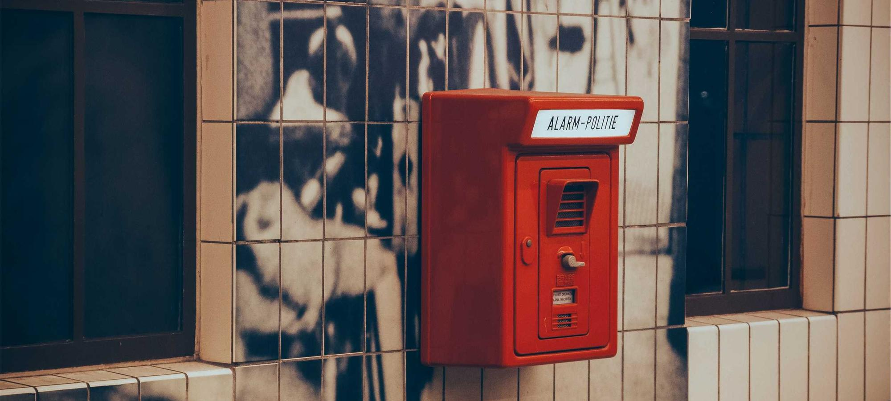

NOVA Long Read · Society
Inside the Decade-Long Effort to Rebuild the Electrical Grid
It is the largest infrastructure project most people will never hear about: a continent-wide rewiring, conducted mostly at night, by crews who have been at it since 2019.
The night shift
The work starts at 22:40, which is when the load on this section of line drops far enough that it can be taken out of service without anyone noticing. By 23:15 the crew has the conductor down, and by 04:50 it is back up, carrying a cable rated for roughly twice what it replaced. In the morning, nothing has visibly changed. That is the point.
Multiply that by eleven thousand spans and you have the shape of the project: a rebuild conducted entirely inside the gaps where the system can spare a few hours. No ribbon cuttings, no ground-breaking photographs, and — because nothing is ever switched off in a way the public experiences — almost no coverage.
What 1962 left behind
The lines being replaced were strung when demand grew in a straight line and generation sat where the coal was. Both assumptions are now false. Supply has moved to where the wind is, demand has become spiky and bidirectional, and the network in between was designed for a problem that no longer exists.
We are not upgrading a grid. We are replacing the physical argument the grid was built to win. Regional transmission planner, speaking on background
Reconductoring — threading a higher-capacity cable through towers that already exist — turns out to be the cheapest way through, because the expensive part of transmission was never the wire. It was the right of way, the consent, and the thirty years of negotiation underneath both.
The queue
Ask anyone in the industry what the bottleneck is and they will say the interconnection queue before you finish the question. Projects wait years for a study that determines what network reinforcement they must fund. The study depends on which other projects in the queue proceed. Many do not. The study is redone.
Four jurisdictions have now moved to cluster studies, processing applications in batches rather than in order of arrival. The early numbers are encouraging and everyone quoting them adds the same caveat: the backlog was a decade in the making and two years of reform has not cleared it.
Median time from queue entry to signed agreement, by year of application. Illustrative figures composed for this prototype; NOVA would publish the underlying dataset alongside the story.
Counting the copper
Every kilometre of replaced conductor produces a kilometre of recovered aluminium and steel, and the recovery contracts have quietly become one of the more competitive corners of the metals market. Two crews described being asked to log reclaimed weight more carefully than installed weight — an accounting emphasis that says something about where the margin sits.
Read next
Who pays for patience
Transmission is recovered through tariffs over decades, which means the bill for tonight's outage window lands on people who are, in some cases, not yet born. That is the standard defence of the model and it is not a bad one. The complication is that the benefit is also distributed unevenly, and the places carrying the most new steel are rarely the places consuming the most new electricity.
“The county gets the pylons and the substation and the traffic. The load centre three hundred kilometres away gets the electricity. You can argue that is fine. You cannot argue it is obvious.”
A decade in sequence
First reconductoring pilot
Sixty kilometres rebuilt under live conditions to test whether night windows could carry the schedule. They could, barely.
Programme committed
The pilot becomes a decade-long capital plan. Crew recruitment, not cable supply, is identified as the binding constraint.
The queue peaks
Median wait for an interconnection agreement reaches 5.4 years. Three jurisdictions announce cluster-study reform.
First reform cohort clears
Median wait falls to 4.6 years. Planners caution that the improvement is concentrated in two regions.
Halfway, on paper
Roughly 47 per cent of planned spans rebuilt. The remaining half includes the difficult crossings deliberately scheduled last.
What finishing looks like
There will be no completion ceremony, because there is no completion. The plan's final year simply hands over to a maintenance cycle, and the crews working tonight will still be working, on spans they rebuilt at the start, which will by then be old enough to need looking at again.
“People ask when it will be done,” one supervisor said, packing up at 05:10 with the line back in service and the sky going grey behind him. “It is a grid. It is never done. The question is whether it is ahead of what we are asking it to carry. Right now it is not. In eight years, maybe.”